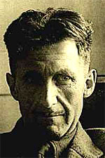

Como para aumentar esa sospecha, encuentro este artículo sobre la política y el lenguaje ; a pesar de lo que se pierde en la traducción (esmerada, de todos modos) y la distancia en el tiempo, me parece inteligente:
…El idioma inglés moderno, en especial el inglés escrito, está plagado de malos hábitos que se difunden por imitación y que podemos evitar si estamos dispuestos a tomarnos la  molestia. Si nos liberamos de estos hábitos podemos pensar con más claridad, y pensar con claridad es un primer paso hacia la regeneración política: de modo que la lucha contra el mal inglés no es una preocupación frívola y exclusiva de los escritores profesionales….
…hay un enorme basurero de metáforas gastadas que han perdido todo poder evocador y que se usan tan sólo porque evitan a las personas el problema de inventar sus propias frases …
… extensiones verbales falsas. Éstas evitan el problema de elegir los verbos y sustantivos apropiados, y al mismo tiempo atiborran cada oración con sílabas adicionales que le dan una apariencia de simetría…
… lo peor de la escritura moderna … consiste en pegar largas tiras de palabras cuyo orden ya fijó algún otro, y hacer presentables los resultados mediante una trampa. El atractivo de esta forma de escritura es que es fácil. Es más fácil —y aun más rápido, una vez que se tiene el hábito— decir «En mi opinión no es un supuesto injustificable» que decir «Pienso». Si usted usa frases hechas, no sólo no tiene que buscar las palabras; tampoco se debe preocupar por el ritmo de las oraciones, puesto que por lo general ya tienen un orden más o menos eufónico.
El ritmo que los lugares comunes traen consigo… y nos ahorran de crear. Casi todas las retóricas en uso: la adolescente, la periodística, (y la deportiva… la retórica del jugador de fútbol que es entrevistado!) y … la clerical (por no decir episcopal). Ay, esos sermones fáciles, esa sonoridad pomposa, vacía, adormecedora…
Cuando se redacta de prisa —cuando se dicta a un taquígrafo, por ejemplo, o se hace un discurso público— es natural caer en un estilo estereotipado y pretencioso. Muletillas como «una consideración que debemos tener en mente» o «una conclusión con la que todos estaríamos de acuerdo» ahorran a muchos una expresión cuya construcción les produciría un síncope. El empleo de metáforas, símiles y modismos trillados ahorra mucho esfuerzo mental, a costa de que el significado sea vago, no sólo para el lector sino también para el que escribe. […]
La gente que escribe de esta manera manifiesta un significado emocional general —detesta una cosa y quiere expresar solidaridad con otra— pero no está interesada en los detalles de lo que está diciendo.
Algo así pensaba yo cuando objetaba (con mucha menos solvencia que Orwell) el abuso del adjetivo-muletilla «patético».
En cada oración que escribe, un escritor cuidadoso se hace al menos cuatro preguntas, a saber:
¿Qué intento decir? ¿Qué palabras lo expresan? ¿Qué imagen o modismo lo hace más claro? ¿Esta imagen es suficientemente nueva para producir efecto?
Y quizá se haga dos más: ¿Puedo ser más breve? ¿Dije algo evitablemente feo?
Pero uno no está obligado a encarar todo este problema. Puede evadirlo dejando la mente abierta y permitiendo que las frases hechas lleguen y se agolpen. Ellas construirán las oraciones por sí mismas —y, hasta cierto punto, incluso pensarán en lugar de uno— y si es necesario prestarán el importante servicio de ocultar parcialmente su significado, aun para uno mismo.
Alguien me preguntaba por qué me fastidian tanto las revistas con posiciones tomadas … Página 12, Panorama Católico, Cabildo… si no se trataba de un fácil repudio contra los extremismos, una jactancia de equilibrio (o tibieza?). Pero no es cuestión de izquierdas, derechas o centros. Se trata de eso que dice Orwell: de estar en guardia, para evitar que otros (nuestras pasiones incluidas) piensen por nosotros.
Bien, pero no tenés por qué enojarse contra los que nos saben ponerse en guardia, me dirán. Así será, digo yo; pero cuando de militantes se trata… … Seguir leyendo